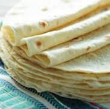

Tortillas

Traditional masa flour tortillas
Ingredients
Steps
- Mix a little water with the masa flour until smooth but not sticky
- roll into a ball
- center in the torilla press, press down hard
- cook on a cast iron pan until light brown
- store in a tortilla pouch until serving
Index